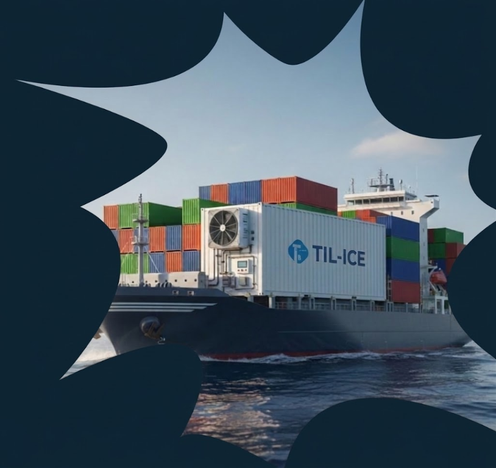

Sobre
A TIL ICE nasceu para enfrentar um dos maiores desafios da aquicultura global: a preservação da rentabilidade na cadeia de frio. Em um mercado que movimenta mais de US$ 150 bilhões anualmente, falhas térmicas no transporte marítimo ainda causam prejuízos bilionários e desperdícios inaceitáveis.
Nossa missão é transformar o transporte de tilápia através da tecnologia IoT. Desenvolvemos soluções inteligentes de monitoramento de temperatura e umidade em containers reefer, garantindo que o produto chegue ao destino final com o peso, a qualidade e o valor agregado originais. Combinamos hardware de precisão e dashboards em tempo real para que exportadores tenham controle total sobre sua carga, do porto de origem ao destino final.
